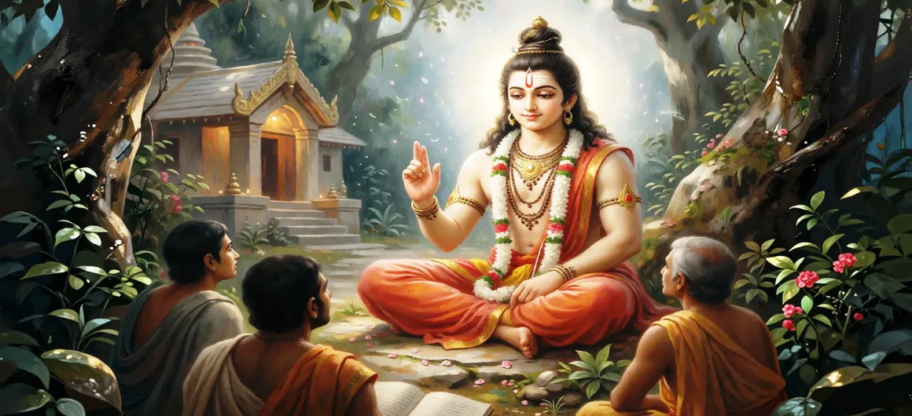

The Glory and Teachings of Lord Kumāra
Chapter 30, the final chapter of the Kumara Khanda, serves as a majestic conclusion to Lord Skanda's mission, encapsulating his divine glory and eternal spiritual guidance.
It reflects on his supreme role as the guardian of righteousness and imparts foundational wisdom for all seekers of truth.
Chapter 30 Highlights & Full Overview
Divine Majesty
Reflecting on Lord Kumāra's glorious victory and purpose.
Timeless Wisdom
Essential teachings on dharma, discipline, and devotion.
Eternal Guardian
Reaffirming his commitment to protect the cosmic order.
Path to Liberation
Guidance for seekers to achieve spiritual emancipation.
Radiant Grace
The enduring influence of Skanda's benevolence on humanity.
Khanda Conclusion
Closing the Kumara Khanda and preparing for new journeys.
Core Topics Detailed in This Chapter
1. Summarizing the Mission of Lord Skanda
The final chapter begins by reflecting on the divine purpose of Lord Skanda's birth and his successful fulfillment of the mission to defeat the tyrant Tārakāsura, restoring divine harmony and peace to all the worlds.
2. The Essence of Dharma and Righteousness
Lord Skanda imparts wisdom on the nature of dharma. He emphasizes that true righteousness is not merely external action but an inner alignment with truth, justice, and the welfare of all beings.
3. Discipline and Spiritual Strength
He teaches that internal discipline and self-control are the foundations of true strength. By mastering the senses and the mind, a seeker becomes invincible against the forces of ignorance and ego.
4. The Importance of Absolute Devotion
The ultimate teaching emphasized is the power of absolute, unswerving devotion to the Divine. It is this surrender and love that connects the soul to the Supreme, facilitating spiritual emancipation.
5. Concluding Reflections of Kumara Khanda
As the Kumara Khanda concludes, it leaves the reader with a profound sense of awe and spiritual inspiration, celebrating the life, wisdom, and eternal protection provided by Lord Skanda.
6. Transition to Yuddha Khanda Overview
With the glorious completion of the Kumara Khanda, the narrative sets the stage for the next section: **Yuddha Khanda Overview**.
Key Teachings and Spiritual Takeaways of Chapter 30
Wisdom as Guidance
Divine wisdom is the essential lamp on the spiritual path.
Inner Mastery
Control of mind and senses leads to lasting inner peace.
Dharma First
Alignment with righteousness ensures harmonious existence.
Pure Devotion
Surrender through love dissolves all barriers to the Divine.
Lasting Impact
Divine deeds leave an indelible mark on human consciousness.
Eternal Protection
Faith in the protector brings confidence and stability.
Spiritual Reflection
Chapter 30 serves as a reflective finale to the Kumara Khanda. It teaches us that the ultimate purpose of life is to align ourselves with dharma, cultivate inner discipline, and offer our lives in pure devotion to the Divine. Lord Skanda stands as our guiding light, eternally protecting those who walk the path of truth.
Living the Message of Chapter 30
Continuously practice self-awareness and discipline to strengthen your character.
Prioritize righteousness (dharma) in all your decisions, however small.
Deepen your devotion through regular reflection and sincere service to humanity.
Key Spiritual Concepts
Steadfast commitment to righteousness.
Self-control and mastery over the self.
Supreme, selfless devotion to the Divine.
The awakening of inner spiritual wisdom.
The path leading to spiritual liberation.
The enduring influence of divine power.
Chapter Summary
Kumara Khanda Chapter 30 concludes the narrative of Lord Skanda's mission, emphasizing his role as the eternal protector and teacher of righteousness. Through his teachings on discipline, dharma, and devotion, seekers find the path to spiritual awakening.
Frequently Asked Questions
1. What is the conclusion of Kumara Khanda in Chapter 30?
Chapter 30 serves as the culmination of the Kumara Khanda, summarizing Lord Skanda's divine mission, his essential teachings on dharma, and his eternal status as the protector of the universe.
2. What are the core teachings imparted by Lord Skanda?
Lord Skanda teaches the importance of righteousness (dharma), inner strength, self-discipline, and total devotion to the Divine as the path to liberation.
3. What comes after the Kumara Khanda?
Following the conclusion of the Kumara Khanda, the narrative progresses into the Yuddha Khanda.
“With the mission fulfilled and wisdom imparted, Lord Skanda remains the eternal light of dharma, guiding every soul toward the Divine.”
Continue Through Shiva Purana
Chapter 30 concludes the Kumara Khanda. Continue your journey to the Yuddha Khanda Overview.